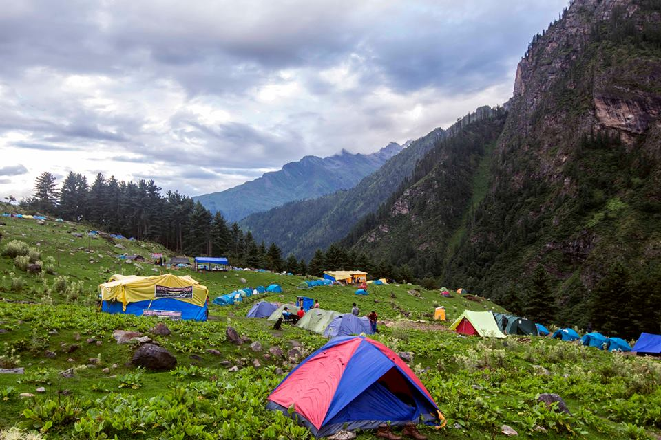
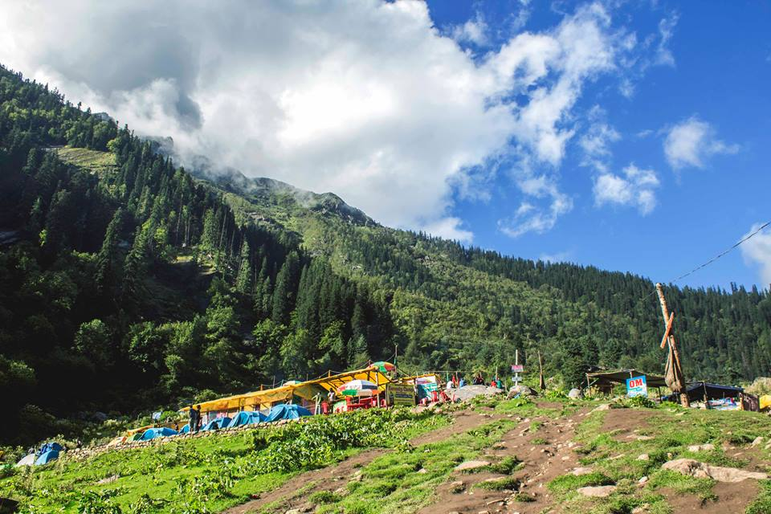
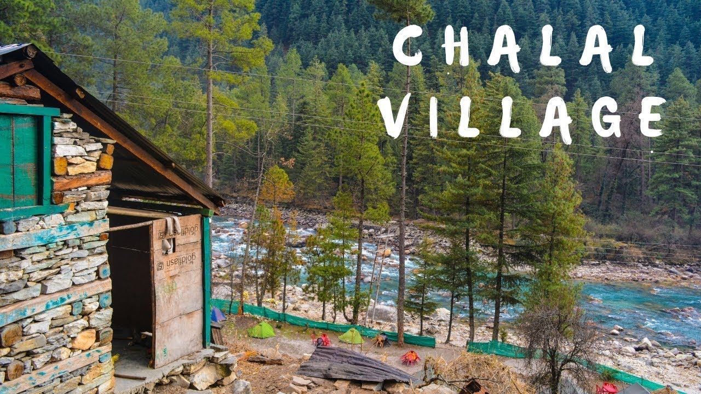

The Whispering Winds (Kasol)
Prachi Negi 11/06/2023 12:15am 2212

Where Shiva and Bob Marley Live in Peace...!!!
Kasol, a place where Bob Marley, Che Guevara, Jesus, Shiva, Durga live in peace together. Peace, the religion for all the chillum-smoking free spirited here. What they preach is love, freedom and happiness. No one needed a reason to laugh. It was all in the air. Joy abound.
Popular as ‘Mini Israel’ in the beautiful state of Himachal Pradesh, Kasol is a quaint hamlet positioned at a height of 1,640 m along the banks of River Parvati. It is located at a distance of 37 km from Kullu and lies between Bhuntur and Manikaran. The site offers picturesque views of Parvati Valley and snow-capped mountains. There is an old swinging bridge which divides Kasol into Old Kasol and New Kasol.
Blessed with the abundance of flora and fauna, milky waterfalls, delectable delicacies and friendly locals, Kasol has become a famous tourist destination for bag packers, trekkers and nature lovers. Not only Indian travellers, even foreigners can be seen in Kasol, especially young Israelis. Thus, it is one of the best places to spend a vacation in the lap of nature with everlasting exquisiteness.
With perfect weather and temperature, Kasol is a year-round destination for tourists. However, most of the people prefer to visit it during the summer season from April to June. Moreover, it is an apt time for adventure enthusiasts as most of the trekking routes become accessible by this time. And notably, Kasol serves as the base camp for many treks. Nature and wildlife photographers travel to discover the hidden gems of this place in winters as snow enhances its beauty.
Take An Evening Stroll
Chalal is the most scenic village in Kasol, which is located around 2 km away from Kasol. Travellers can take a stroll from the town of Kasol by crossing a suspension bridge that has been set over the River Parvati.
Feel The Distinctiveness of Rural Life
To get a real feel of the rural life and culture, travelers should visit isolated villages of Malana and Tosh. Both these villages are located at a distance of 21 km from Kasol. Known as ‘Little Greece’ and one of the oldest democracies of the world, Malana remains unaffected by the touch of contemporary lifestyle. On reaching Malana, you can enjoy a magnificent sight of green meadows, peaks and herders’ huts.
Gorge on Israeli food
As Kasol witnesses a number of Israeli tourists, there are several cafes and restaurants amidst the lush green forests that serve delicious Israeli food such as Bureka, Shakshouka and lemon cake. Jim Morrison Cafe, King Falafel and Moon Dance Cafe are some of the must-try Israeli cafes in Kasol.
Shop Till You Drop
Kasol is a shopper’s paradise as it has everything that a traveler is looking for. In the colorful markets, you can get a variety of items from sweatshirts to chillums. So, explore the markets and takeaway semi-precious stones, souvenirs and pendants for your family and friends.
Camp Overnight!
To have an adventurous and interesting stay in Kasol, you should avoid hotels and try a campsite stay. Kasol offers breathtaking sites for camping aside the river streams. From the campsites, your eyes can behold a splendid sight of the sunrise. Also, you can enjoy a bonfire night under the glittery sky.
Dance On The Beats of International DJ’s
Kasol is becoming a hot spot for parties, which go for about 1 week. In these parties, you will be dancing to the tunes of international DJ’s. These parties are mostly arranged by Israelis in mid-May and June near the Chalal village.
Consume A Glass of Rice Beer
Chang is a famous rice beer made by the locals of Himachal Pradesh. You will get this drink at any beer shop. Notably, the drink doesn’t contain alcohol.
It’s Time To Explore Kasol
While being surrounded by nature, you can experience the peace far beyond your imagination. The green environs make Kasol an idyllic destination for meditation and rejuvenation. Further, if you want to get familiar with the raw beauty of Kasol then you should undertake trekking as it is packed with endless action and thrill. Here we’re listing four amazing treks for you, which will give you a lifetime experience:
1. Vibing at Chalal
Chalal is situated just at a 3 km distance from Kasol. The striking village on the banks of River Parvati is known for its culture and traditions. On this venture, you will cross a suspension bridge over the river. Further, your naked eyes will enjoy a sight of lofty trees, waterfalls, exotic flowers and the rural household. After reaching here, you can do camping and party at night. The most wonderful thing about this place is the locals who offer a warm welcome.
2. Tosh and Tranquility
Tosh is a tranquil village in Himachal Pradesh, which is situated at an altitude of 2399 m above the sea level. Notably, it is located at an end of the Parvati valley. If you have reached Kasol, you can hike to Tosh village via steps located opposite to the Shiva Temple. The course passes through lovely apple orchards and green meadows. You will come across a Jamdagni Rishi temple where you can capture a stunning sight of this ancient temple in your camera. Also, you are allowed to go on the temple’s roof from where you can enjoy the views of snow-clad peaks. The trek offers various options for fun and excitement, and it keeps surprising the trekkers with its charm. With a perfect blend of thrill and calmness, the trek surely promises you a wonderful adventure.

3. Grahan’s Local Flavor
With a population of 350 villagers, Grahan features around 50 houses. Also, it boasts of ancient temples with significant architecture. On this Kasol to Grahan trek, you will meet kids with whom you can play pithoo or cricket. Moreover, you will feel relaxed on this journey as the path is filled with lush green forests of pine and oak trees.

4. Kheerganga, A Natural Beauty
Situated at an altitude of 3,692 m, the Kheerganga trek starts from Kasol. The thrilling journey gives you an opportunity to witness the beauty of confluence point of Tosh and Parvati rivers, Barshaini. Notably, locals believe that Kheerganga was an abode to Lord Shiva and his son Kartikeya. Further, the trail goes through slippery slopes and a few wooden bridges. During the journey, your eyes will feast on charming waterfalls and that will be the point when you will realise that Kasol is much more than just as a trekking destination. The crystal-clear sky and vast green scenery are a much-needed delight to revitalize yourself. The gurgling of waterfalls, chirping of birds and sounds of Himalayan deer will fall like a melody into your ears and heart. On reaching the top, you will enjoy a relaxing dip in the natural hot water pool.

5. Sar Pass Trek
Positioned in the magnificent Pin Parvati Valley at an altitude of 4206 m, Sar Pass is an ideal escape for nature and adventure lovers. One thing that will never leave your side on this journey is Sar Lake. The trail takes you through the dense forests of oak and pine, Himalayan villages, serene lakes, stunning streams and alpine meadows. Moreover, the valley is known for colourful flowers and butterflies like dodona durga, albulia mellica, aulocera swaha, lycaena, parnassius and heliophorus sena. Also, you will come to a sight of several Indian and migratory birds like woodpecker, great barbet, monal, black bulbul, griffon and the slaty-headed parakeet. You should undertake this trek to challenge your inner potential for some thrill and excitement.
A joint, as it is popularly called, is not just something you smoke, it’s a religion. If the joint is not there, friendship or the bro-code people brag about would come to a naught. If not a joint, there is nothing else that the friends share. No friendship. They can kill each other for smoking 'it' and die for each other after smoking 'it'. All in the name of God.